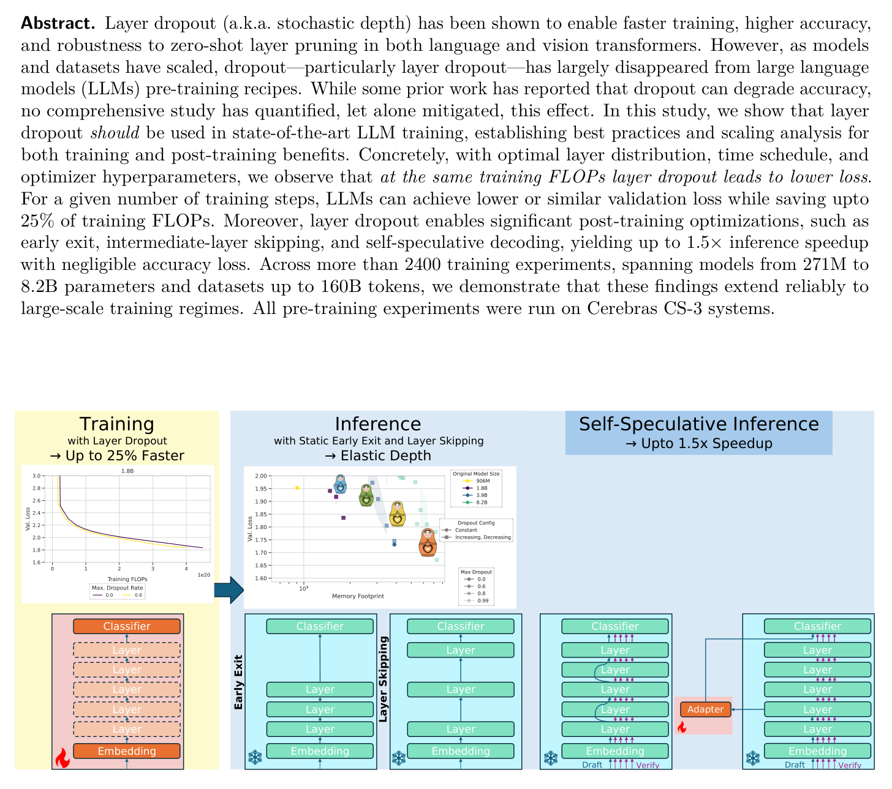
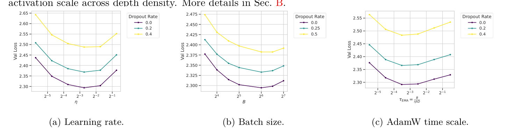
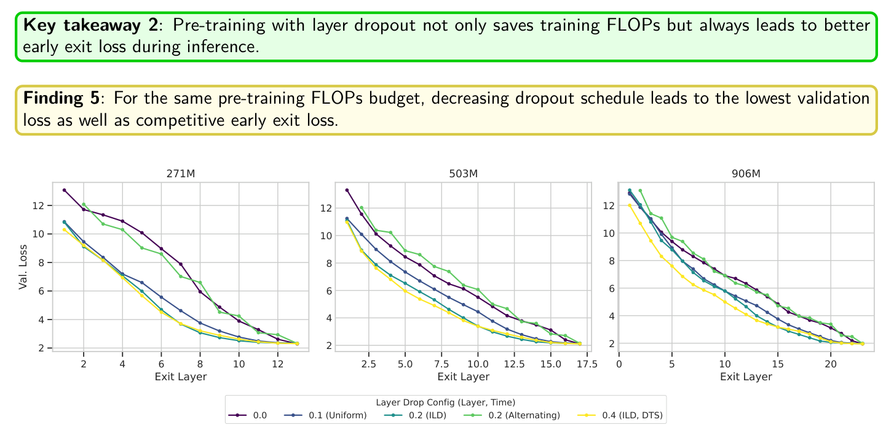
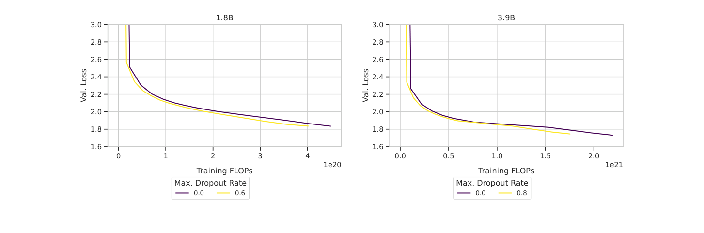

Layer Dropout（也叫随机深度）本来能让训练更快、精度更高，还能让模型对推理时减层更鲁棒。但随着模型和数据规模上去，它在LLM预训练配方里基本消失了，理由是有工作报告它会掉精度：而没有人系统量化过这个效应，更没有人尝试把它修好。
这篇来自Cerebras与MBZUAI的研究把这个问题查清楚了：在固定架构与数据、271M到3.9B参数、最多116B token的2400多次训练里，只要配置正确，layer dropout在同训练FLOPs下能拿到更低的loss，最多省25% 训练FLOPs，并解锁最高1.55倍的推理加速。
LLM预训练极其昂贵，时间到精度上的小幅改进就能省下数百万美元。历史上dropout是卷积网络与早期Transformer的标配，但模型扩到数十亿参数、数据集扩到万亿token之后，dropout在很大程度上被放弃了：单轮训练海量数据几乎没有经典过拟合的机会，而且有实证证据表明激活层面的dropout在这种条件下会损害性能。
但有一类dropout不只是正则化：Layer Dropout（随机深度）跳过的是整个transformer block。与激活dropout或非结构化稀疏不同：后者因为稀疏kernel的开销，通常换不来真实的墙钟加速：跳过整层带来的是结构化稀疏，活跃训练FLOPs几乎随丢弃率线性下降；它还会让模型对推理时的减层执行更鲁棒，使一个预训练模型能不用重训就适应不同的延迟与算力预算，从而支撑弹性深度、提前退出、中间层跳过这类零样本优化。

问题在于，layer dropout在现代LLM预训练里的作用从未被系统评估过。已有证据零散地分布在不同的模型族、数据规模和实现约定里，很多报告出来的精度下降，可能反映的是时间表或超参没配好，而不是方法本身的局限。于是留下一个基础问题：现代大规模LLM训练到底该不该用layer dropout，以及要怎么配置，才能在保住精度的同时拿到训练与部署收益？
这是首个针对LLM的layer dropout统一实验研究：在固定架构与数据的前提下，系统变化三件事，优化器超参、层稀疏在深度上的分布与粒度、以及时间维度上的dropout调度；实验覆盖2400多次训练、271M到3.9B参数、最多116B token。为了避开「超参抽奖」，他们先在每个dropout率下系统优化学习率、批大小与权重衰减，再比较配置。
整体路线是层层递进的：先确定每个dropout率下的最优超参，再定最优粒度，再定层分布与时间表配置；随后评估各种深度推理优化的收益，量化精度随训练规模扩张的表现，最后用激进的dropout率做更大规模的验证。
形式化上，第 ℓ 层在训练步t的残差更新可写作H ← H + r·M⊙f(H)，其中M是按序列采样的伯努利掩码、r是缩放因子。关键实现细节是：与其对所有序列都算一遍f(H) 再乘掩码，不如只在掩码为1的序列上执行f(H)，这样直接省下该层约p比例的FLOPs。推理时dropout关闭，但会换用另一个缩放因子。
不同文献与框架对训练缩放因子的选择并不一致：原始dropout用1、PyTorch与TensorFlow的dropout用1/ρ（ρ 为层密度，即1减去丢弃率）、最早的随机深度论文用「训练1、推理p」、DINOv2用「训练1/ρ、推理1」，fairseq与torchtune则把两者都设为1，而这些选择常常在论文里没有写明，得去翻源码。

论文的答案是：训练缩放因子取1/ρ 是超参稳定迁移的关键。依据是CompleteP提出的「最大残差流更新」准则：每个残差块的权重对特征移动的贡献应当是1/L量级，非残差块则应保持常数级。由于layer dropout实际上降低了训练时的有效深度，他们把不同dropout率视作不同有效深度，并用这一准则保证初始化在不同有效深度下都稳定。坐标检查显示：取1会失败、必须逐率调参；取1/ρ 则基本满足要求，可以让学习率、权重衰减、批大小等最优超参跨大量dropout率保持不变。推理侧取缩放因子为1，以保证推理时的期望激活与训练时一致。
粒度上首先要决定的是「丢什么」。一个transformer层里有两个残差块：注意力块与前馈块。对两者独立采样掩码叫子层dropout，对整层用同一个掩码叫层dropout；DINOv2与前作Progressive Layer Dropout用的是子层，LayerDrop与LayerSkip用的是整层，此前没有人系统比较过。结果显示在精度上整层dropout更好，而且随模型变大，dropout带来的损失退化会减弱：这直接鼓励了在更大模型上尝试更激进的丢弃率。张量粒度上则比较了按批与按序列采样掩码的方案。
分布上比较了三种：均匀分布；递增分布（ILD），丢弃率从第一层的0线性增长到最后一层的最大值；交替分布（ALD），只在每隔一层上施加dropout。任意分布下，平均丢弃率就是该步的FLOPs节省比例。在固定平均丢弃率（等价于固定FLOPs预算）下，非均匀分布始终优于均匀分布；ALD在最小模型上有优势，但随着规模增大优势减弱，而ILD相对均匀分布的改进反而扩大。结论是模型越大越该用ILD。
分布决定稀疏在深度上怎么分配，时间表决定正则压力在训练过程中怎么演变。论文形式化了三种：恒定（全程不变）、递增（从0线性升到目标值）、递减（从目标值线性降到0）。为了公平比较，他们用「平均训练dropout率」度量总的活跃FLOPs节省。
结论很干净：在所有规模上，递减时间表都稳定优于恒定与递增。更值得注意的是，在503M与906M上、5% 的FLOPs节省下，「ILD + 递减」拿到了比稠密基线更低的验证损失，这是第一次证明用更少的训练FLOPs可以打赢稠密基线。相反，递增时间表显著恶化loss：早期文献报告的递增时间表好处，在大规模单轮训练的场景里没有复现。
作者对这个现象的直觉是：训练初期的高噪声迫使权重空间做更多探索（降偏差），随后的衰减让模型落进稳定极小值（降方差）。也可以把它看成一种「随机模型生长」：有效容量随训练平滑增加，而不需要像常规模型生长那样重新初始化；或者看成课程学习：先用较小的有效深度学一个更难的任务，随着有效深度增加，任务逐渐变简单。由此得到的第一条最佳实践是：层间递增 + 时间递减。
用layer dropout预训练的主要动机，是让模型对推理时的深度优化更鲁棒。论文把这些技术分成两类：零样本方法（不改任何权重，直接在层数更少的模型上做自回归解码）与后训练方法（不改预训练权重，但加适配器/路由或修改解码算法）。
零样本侧有两个方向。提前退出：定义在第 ℓ′ 层退出就是执行嵌入层、前 ℓ′ 层与反嵌入层，等价于跳过后面的层。稠密基线哪怕只提前退出一层，loss都会明显恶化；而用dropout训练的模型提前退出一部分层时loss保持平稳，而且在整个深度范围内，退出任意一层的loss都低于没有dropout的模型，dropout率越高越好。跳层：稠密基线一旦跳层loss立刻飙升，而dropout训练的模型表现出优雅退化，让一个更大的模型能平滑降到更小模型的性能水平：相当于在标准预训练配方里免费拿到了通常需要复杂改造或继续预训练才能得到的弹性。
这里有一个明确的取舍：交替分布（ALD）擅长跳层鲁棒性但早退表现差，ILD则有更好的基础精度与早退鲁棒性、跳层能力欠佳，实际选用要看部署需求。另一个关键发现是：平均训练dropout率就能预测模型对提前退出与跳层的零样本鲁棒性，不需要重新训练或额外评估。
后训练侧也验证了两种：early exit adapters（冻结预训练主干，在若干位置插入适配器并用自蒸馏对齐最终层输出）与自投机解码（用模型自己的一个层子集当草稿模型）。用dropout预训练的模型在所有规模上都优于稠密基线，而且dropout率更高的模型在适配器训练上有更好的起点，说明深度感知的预训练是放大后训练收益的前提。

训练侧的核心结果可以概括成三句话：在相同训练FLOPs下，配置得当的layer dropout能得到更低的loss，部分设置甚至优于稠密基线；在固定训练步数下，模型能达到更低或相当的验证损失，同时节省最多25% 的训练FLOPs；随着token-per-parameter增加，ILD + 递减时间表的损失退化始终稳定在约0.5% 以内，说明它不会妨碍规模化。

推理侧的收益来自深度弹性。模型在任意深度提前退出的loss都更优；跳层时能优雅退化；配合自投机解码拿到实测加速。下表是超过10亿参数的三次大规模验证（激进dropout率、20 TPP），可以看到模型越大对结构化稀疏越鲁棒，dropout率也越可以激进：8.2B模型在25% FLOPs节省下验证损失仍低于稠密基线，自投机解码加速1.55倍。
| 指标 | 1.8B（pmax 0.6） | 3.9B（pmax 0.8） | 8.2B（pmax 0.99） |
|---|---|---|---|
| 层分布 / 时间表 | 递增 / 递减 | 递增 / 递减 | 递增 / 递减 |
| 训练FLOPs节省 | 15% | 20% | 25% |
| 验证损失 | 1.836 | 1.745 | 1.663 |
| 跳掉隔层后的loss | 2.282 | 2.129 | 1.991 |
| 在0.75L处早退的loss | 2.329 | 2.143 | 1.777 |
| 自投机解码加速 | 1.34× | 1.54× | 1.55× |
论文也列出了几条边界：超参迁移在中小dropout率上成立，但激进的高dropout率下学习率与权重衰减会下降，且迁移分析主要针对恒定时间表，把它扩展到递减时间表可能还能再提精度；研究只覆盖transformer层级的dropout，注意力头或神经元粒度能否带来类似的结构鲁棒性仍是开放问题；没有与Mixture-of-Depths这类学习式深度优化方法对比；跨架构泛化（MoE、非Transformer）尚未探索；也还没有能预测「不损精度前提下最大可用dropout率」的完整scaling law，以及推理收益随TPP变化的定量规律。
参考：https://arxiv.org/abs/2609.05275